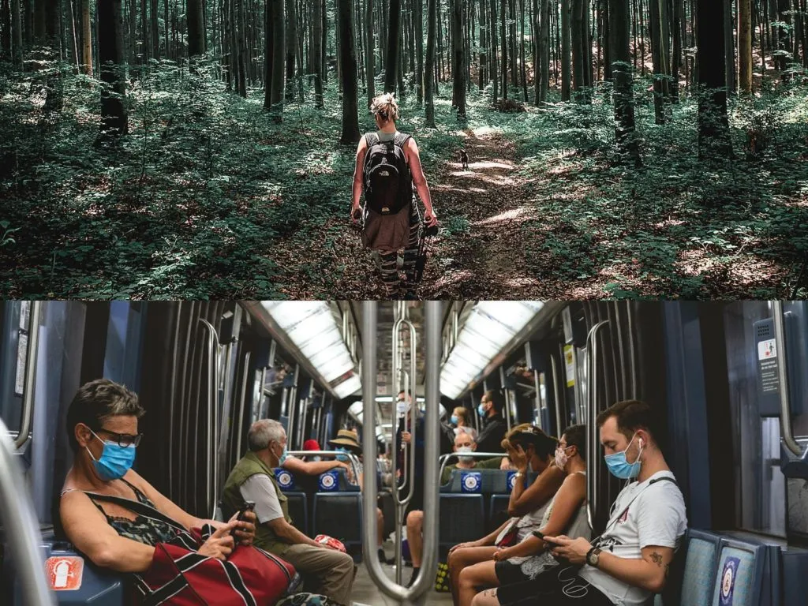

Suite au nouveau confinement décrété en nov 2020, nous soutenons le manifeste rédigé par les fondateurs de Chilowé, et envoyé au Président de la République, pour un libre accès à la nature.

Monsieur le Président de la République,
Vous l'avez dit dans votre discours du 28 octobre dernier annonçant ce nouveau confinement, dans la lutte contre la Covid-19 "rien n'est plus important que la vie humaine". L'immense majorité des 67 millions de Français vous approuve et accepte de mettre provisoirement de côté ses libertés individuelles, au nom de la solidarité et de la fraternité qui unissent notre peuple.
C'est bien entendu notre cas ; tous ensemble, nous nous engageons au quotidien pour la protection des personnes les plus vulnérables face au virus. Depuis le 30 octobre, nous sommes donc confinés chez nous et ne sortons que munis d'une attestation : l'immobilité est devenue la règle, le déplacement l'exception.
Nous ne saurions remettre en cause la plupart de nos nouveaux devoirs, car nous comprenons leur utilité dans le cadre de cet engagement collectif. Pour autant, l'une des mesures du reconfinement suscite notre indignation : il s'agit de l'interdiction des déplacements liés à l'activité physique au-delà d'une heure quotidienne et d'un rayon d'un kilomètre autour de notre domicile.
Une menace pour la santé des Français
Cette pandémie a déjà tué 41 000 de nos concitoyens et le deuil touche chaque jour de nouvelles familles. Nous vous appelons pourtant à considérer dans le même temps les impacts que le confinement va générer sur la santé de l'ensemble de notre population à court, moyen et long terme.
Denis Masseglia, président du Comité national olympique et Sportif français a déclaré : "dans 20, 30 ou 40 ans, on se prépare à une crise sanitaire qui ne sera rien à côté de celle que l'on vit actuellement. L'inactivité physique va inévitablement se traduire par une augmentation des maladies cardio-vasculaires".
Au niveau psychologique, l'Académie de médecine mettait dès le mois de mars en garde contre les effets de la perte brutale de la liberté de mouvement et la limitation des relations sociales.
Des mesures disproportionnées
Nous ne comprenons pas pourquoi on ne peut pas aujourd'hui en France se promener librement dans les forêts, les plaines et les montagnes, pédaler sur les routes et les sentiers, pagayer sur les lacs et les rivières, nager dans la mer, naviguer ou glisser sur l'océan.
Notre proposition
Nous vous proposons d'adapter les règles : autorisation de principe des activités de plein air, limitées à 3 adultes avec respect des mesures de distanciation sociale ; limitation des déplacements à la région de résidence, sans limite dans le temps.
Aucun peuple ne peut se passer durablement d'avoir accès à la nature, Monsieur le Président. Croyez-nous, la lutte des Français contre la Covid-19 n'en sera que plus performante si nous pouvons crapahuter librement et responsablement !
Ont également signé cette tribune : Yann Arthus-Bertrand, photographe / Julien Bayou, Europe Écologie les Verts / Julien Vidal / Liv Sansoz, championne du monde d'escalade / Camille Etienne, activiste pour le climat / Clémentine Bacri et Adrien Normier, Des Ailes pour la Science / Guirec Soudée, navigateur / et beaucoup d'autres.